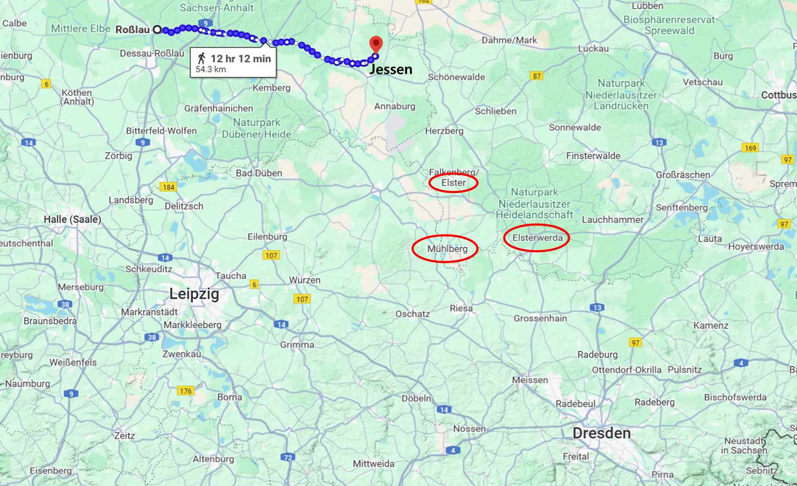
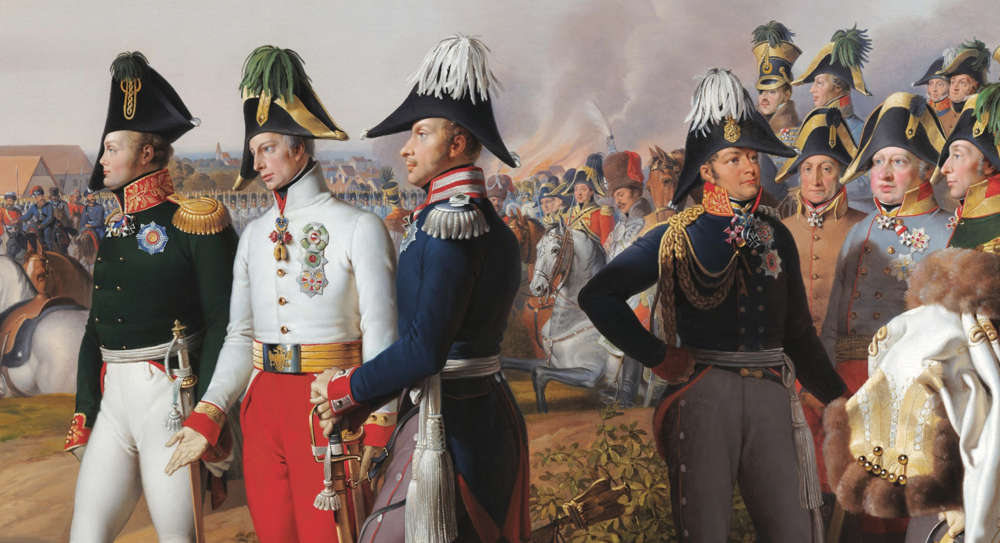
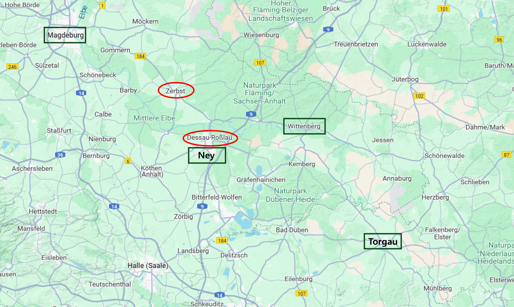
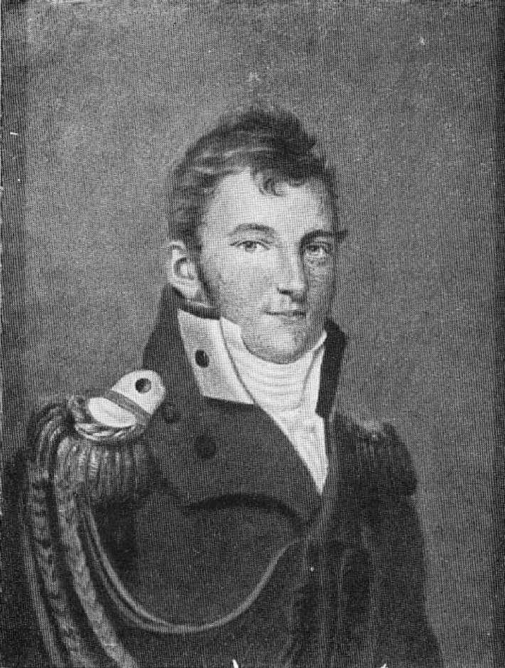
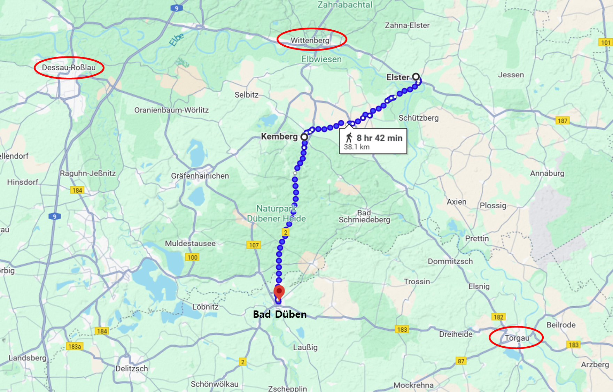
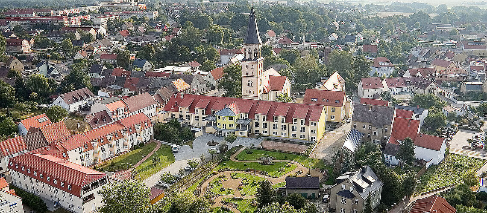

라이프치히로 가는 길 (10) - 들켜 버린 편지
게시: 2024-12-30T06:30:04+09:00
타우엔치언이 블뤼허에게 전한 소식은 애써 놓았던 엘스터의 다리가, 불과 몇 개 대대의 그랑다르메가 엘베 강 건너 바르텐부르크에 나타났다는 소식에 놀란 베르나도트의 명령에 의해 해체되었다는 매우 복장 터지는 소식이었습니다. 뿐만 아니었습니다. 타우엔치언은 여태까지 베르나도트의 지휘에서 벗어나 블뤼허와 작전을 함께 하겠다고 큰 소리를 뻥뻥 쳤지만, 얼굴을 맞대고 나서 하는 소리는 베르나도트의 명령에 따라 그의 제4군단 전체를 북서쪽인 예센(Jeßen)으로 이동해야 한다는 것이었습니다. 네의 위협을 받은 베르나도트가 모든 부대를 로슬라우(Roßlau) 일대로 불러들이는 것이었습니다. 당장 슐레지엔 방면군이 도강 지점으로 찍어놓았던 뮐베르크(Mühlberg)에도 타우엔치언의 부대가 주둔하고 있었는데, 그 부대도 철수시켰습니다.

(엘스터와 예센, 로슬라우의 위치를 보여주는 지도입니다. 이 지도를 보면 왜 베르나도트가 타우엔치언을 예선으로 이동시켰는지 알 수 있습니다. 엘스터에서 예센까지도 꽤 멀지만, 예센과 로슬라우도 만만치 않은 거리입니다. 애초에 타우엔치언이 너무 동쪽으로 멀리 전개되었던 것입니다. 그러니 비텐베르크의 뷜로를 지원하기 위해서는 예센 방향으로 이동하는 것이 옳은 전개였습니다.) 타우엔치언의 호언장담을 믿고 여기까지 왔던 블뤼허와 그나이제나우에게 있어 이건 타우엔치언의 배신에 가까운 행동이었지만, 그래도 그들은 뮐베르크에서 강을 건너 진격하려 했습니다. 그러나 그들의 주변에도 그랑다르메의 일부 부대들이 나타나기 시작했고, 무엇보다 뮐베르크에 부교를 놓기 위해서 꼭 필요했던 러시아군 부교병 부대의 도착이 늦어져 발이 딱 묶이게 되었습니다. 그렇게 애를 태우던 그나이제나우에게 9월 28일 밤, 엎친 데 덮친 격인 편지가 날아들었습니다. 보헤미아 방면군에서 프리드리히 빌헬름의 부관 역할을 하고 있던 크네제벡(Knesebeck)이 3일 전인 25일 보낸 것이었습니다. 내용은 얼츠비어거 산맥을 넘어 다시 작센으로 진격헤야 하는 보헤미아 방면군은 아직 언제 어느 경로를 통해 진격할지 정해진 것이 아무 것도 없다는 것이었습니다. 따라서 보헤미아 방면군의 작센 진격은 아무리 빨라도 10월 2일 이전에는 힘들 텐데, 그 전에 슐레지엔 방면군 홀로 엘베강을 도하한다면 나폴레옹의 집중 공격 대상이 될 것이니 너무 위험하다는 경고였습니다. 나쁜 소식은 거기서 그치지 않았습니다. 그나이제나우가 크네제벡에게 최근 보냈던 편지를 그만 프리드리히 빌헬름이 모조리 읽어버렸다는 소식도 있었던 것입니다. 그나이제나우가 보냈던 그 편지 속에는 그나이제나우가 크네제벡에게 '베르나도트 휘하의 프로이센 장군들인 타우엔치언과 뷜로를 베르나도트의 지휘권에서 탈출시켜 함께 엘베강을 너머 진격할 계획'이라는 내용이 들어있었습니다. 빠른 진격을 원하는 프로이센 국왕에게는 어떻게 보면 매우 흡족한 이야기가 될 수도 있었으나, 프리드리히 빌헬름은 그 무엇보다도 체제의 위계질서를 중시하는 꼰대형 인간이었습니다. 그는 이렇게 자신과 알렉산드르의 합의하에 베르나도트에게 배속시켜 준 프로이센군 2개 군단을 그나이제나우가 '납치'하다시피 빼내려는 계획에 대해 매우 불쾌하게 여겼습니다. 크네제벡은 곧 그나이제나우에게 국왕으로부터 질책이 떨어질 것이라고 겁을 먹고는 그나이제나우에게 미리 경고를 준 것이었습니다. 일이 이렇게 되자, 그나이제나우로서도 뷜로와 타우엔치언의 프로이센 군단을 납치하겠다는 계획을 포기할 수 밖에 없었습니다. 큰 소리만 치던 타우엔치언도 베르나도트의 명령을 충실히 이행하느라 북서쪽으로 사라져버린 뒤라서, 어차피 할 수 있는 것이 없기도 했습니다.

(이 그림은 라이프치히 전투에서 승리했음을 선포하는 세 군주, 왼쪽부터 알렉산드르, 프란츠 1세, 그리고 프리드리히 빌헬름의 모습으로서, 크라프트(Johann Peter Krafft)가 그린 큰 그림의 일부를 확대한 것입니다. 프리드리히 빌헬름 바로 오른쪽에 서 있는 둥글둥글 인상 좋아 보이는 사람이 바로 크네제벡입니다. 그는 나폴레옹보다 1살 많았지만, 진급은 느려서 이때 겨우 대령 계급이었습니다.) 그런데 바로 다음 날인 9월 29일, 알렉산드르로부터 블뤼허에게 9월 25일자 편지가 도착했습니다. 크네제벡의 편지와 같은 날짜에 씌여진 것이었습니다만, 이건 또 희망적인 소식으로 가득했습니다. 보헤미아 방면군이 곧 작센으로 진격할 텐데, 이번에는 나폴레옹의 소굴인 드레스덴이 아니라 그의 뒤통수에 해당하는 라이프치히로 진격하겠다는 내용이었습니다. 그럴 경우 보헤이마 방면군은 나폴레옹과 작센 남부인 프라이베르크(Freiberg) 인근에서 격돌하지 않을까 싶은데, 베르나도트와 블뤼허가 함께 엘베강을 건너 라이프치히로 진격하여 나폴레옹의 후방을 견제해주면 좋겠다는 요청도 있었습니다. 이건 블뤼허와 그나이제나우가 학수고대하던 소식이었습니다. 특히 알렉산드르가 블뤼허에게 이런 편지를 보냈다는 것은 당연히 베르나도트에게도 동일한 내용을 보냈다는 뜻이니, 베르나도트도 그 무거운 엉덩이를 움직이지 않을 수 없기 때문이었습니다. 하지만 알렉산드르의 편지 속에도 조심스러운 내용이 들어 있었습니다. 블뤼허에게는 보헤미아 방면군이 작센 침공을 시작하면 그때 엘베강을 건너라는 지시가 있었던 것입니다. 또한 '만약' 베르나도트가 엘베강을 건너지 않는다면, 블뤼허는 그 북쪽에서 혼자 엘베강을 건너지 말고 남쪽으로 내려와 드레스덴 근처인 피르나 일대에서 베니히센의 폴란드 방면군과 합세하여 강을 건너라는 이야기도 있었습니다. 그러니까 알렉산드르도 자신의 지시에도 불구하고 베르나도트가 엘베강을 건너지 않을 수도 있다는 것을 알고 있다는 소리였습니다. 여기서 의문이 들 수 있습니다. 대체 연합군이 무슨 사교클럽도 아닐 텐데 베르나도트에게 '건너고 싶으면 건너고 싫으면 말고' 라는 식으로 명령이 전달된 것일까요? 실은 그게 아니라, 프로이센 사람들이 베르나도트를 의심의 눈초리로 삐딱하게 색안경을 끼고 보고 있었을 뿐, 베르나도트는 진격하고 싶어도 마음대로 그럴 수가 없는 처지였고, 그의 어려운 환경을 알렉산드르도 잘 알고 있었다고 보는 것이 맞습니다. 베르나도트의 베를린 방면군은 일단 베를린 일대를 방어하는 것이었는데, 그것 자체가 아주 쉬운 것만은 아니었습니다. 일단 나폴레옹 진영의 제1급 맹장인 다부가 함부르크 일대를 장악한 채 호시탐탐 베를린 방면을 노리고 있었습니다. 그런 다부를 무시한다고 하더라도, 베르나도트가 병력을 전개한 제릅스트(Zerbst), 데사우(Dessau), 로슬라우(Rosslau) 일대의 좁은 지역은 사방이 적진으로 둘러싸인 곳이었습니다. 가령 남쪽의 정면에는 네의 베를린 방면군이, 동쪽에는 비텐베르크와 토르가우의 요새가, 서쪽으로는 마그데부르크의 프랑스군이 자리잡고 있었습니다. 그러니까 후방인 동쪽이 모조리 아군 지역인 슐레지엔 방면군과는 환경 자체가 달랐던 것입니다.

(지도를 이렇게 놓고 보니까 베르나도트의 병력 전개에 많은 어려움이 있어 보이기는 합니다. 파란색 사각형이 그랑다르메의 주요 거점입니다.) 실제로 블뤼허의 부관인 륄(August Otto Rühle von Lilienstern) 소령이 블뤼허의 편지를 들고 베르나도트를 만나보니, 베르나도트는 여태까지 프로이센인들이 비난하던 것과는 매우 다른 태도를 보여주었습니다. 그는 블뤼허가 어느 정도의 병력을 도하시킬 것인지를 묻고는, '전체 슐레지엔 방면군이 엘베강을 건널 것'이라는 답변을 듣자 다음과 같은 내용으로 이야기를 했을 뿐만 아니라, 그 내용을 문서로 적어 블뤼허에게 전달하라고 주기까지 했던 것입니다. - 북부 방면군도 향후 3~4일 안에 전체 병력이 엘베강을 건널 것이다. - 북부 방면군이 로슬라우 일대에서 소란을 일으켜 네의 이목을 끌어줄 테니, 그때 슐레지엔 방면군은 엘스터(Elster)에서 강을 건널 것을 권고한다. - 만약 나폴레옹의 주력이 슐레지엔 방면군 방향으로 진격한다면, 북부 방면군이 그 측면을 공격해주겠다. 만약 나폴레옹이 북부 방면군을 향한다면, 슐레지엔 방면군도 그렇게 해주기를 바란다.

(기억하시겠지만, 몇 개월 전 바우첸 전투 직후 오데르 강을 건너 후퇴하려던 짜르와 언쟁을 벌여가며 슈바이트니츠 요새에서 농성하자고 주장했던 겁없는 소령이 바로 륄 소령이었습니다. https://nasica1.tistory.com/685 참조) 륄 소령이 베르나도트의 편지를 들고 9월 30일 블뤼허에게 돌아오자, 블뤼허도 즉각 베르나도트에게 편지를 써서 10월 3일 슐레지엔 방면군은 일제히 엘스터에서 강을 건널 것이고 아마도 그 다음 날 켐베르크(Kemberg)에서 네의 부대와 격돌하여 승리를 거둔 뒤, 베르나도트와 바트 뒤번(Bad Düben)에서 합류하게 될 것이라고 알렸습니다. 기억하시겠지만 원래 그나이제나우가 점찍은 도강 지점은 뮐베르크였습니다. 블뤼허는 왜 베르나도트의 한마디에 그나이제나우가 고심해서 만든 도강 계획을 백지화했던 것일까요? 알고 보면 베르나도트가 대단한 지략가였기 때문이었습니다.

(엘스터에서 켐베르크를 거쳐 바트 뒤번에 이르는 거리는 약 38km로서, 그냥 행군하면 약 2일이 걸리는 거리입니다.)

(바트 뒤번(Bad Düben)도 그렇고 그 북동쪽에 보이는 바트 쉬미더베르크(Bad Schmiedeberg)도 그렇고 앞에 '바트'가 붙는 동네가 꽤 있습니다. 저 바트(Bad)는 영어의 bath에 해당하는 단어로서, 저 단어가 붙은 동네엔 원래 온천과 샘이 있다는 소리라고 합니다. 사진은 현재의 바트 뒤번의 모습인데, 지금도 인구 8천이 채 안되는 작고 예쁜 도시입니다.) Source : The Life of Napoleon Bonaparte, by William Milligan Sloane Napoleon and the Struggle for Germany, by Leggiere, Michael V With Napoleon's Guns by Colonel Jean-Nicolas-Auguste Noël https://kleist-digital.de/personen/ruehle_august https://www.bad-dueben.de/ https://en.wikipedia.org/wiki/Karl_Friedrich_von_dem_Knesebeck